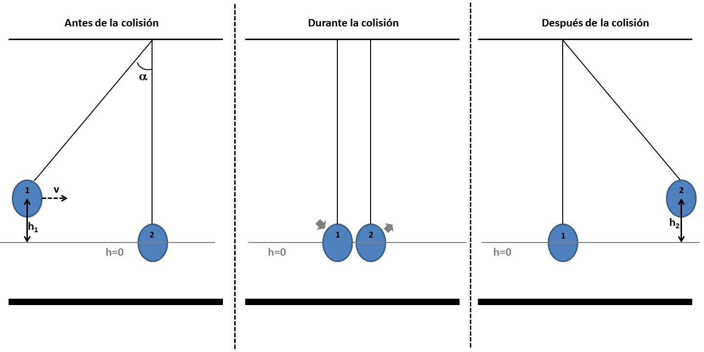

Quizá el aparato más famoso para demostrar la conservación de la energía y del momento lineal. Se trata de un conjunto de bolas suspendidas y conectadas entre sí, diseñado en su forma moderna probablemente en la década de 1960 y posteriormente vendido como juguete de oficina.
Es un dispositivo formado generalmente por un número impar (5 o 7) de péndulos que pueden colisionar entre ellos, cada uno con sus contiguos, de forma quasi elástica.
Los péndulos son dispositivos mecánicos que consisten en una masa suspendida de un punto fijo mediante una cuerda o un hilo. En la investigación de física o laboratorios, se utilizan para estudiar y demostrar principios de oscilación y movimiento armónico simple.
En términos más sencillos puede ser un bonito decorativo en nuestra sala o habitación.
Al final podemos ver que el proyecto es un gran avance para la tecnología y ciencias.